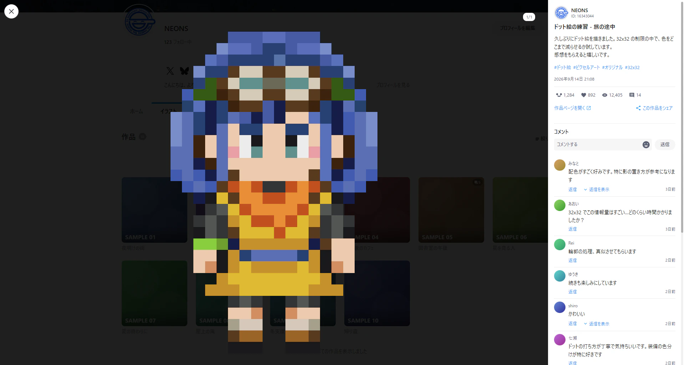
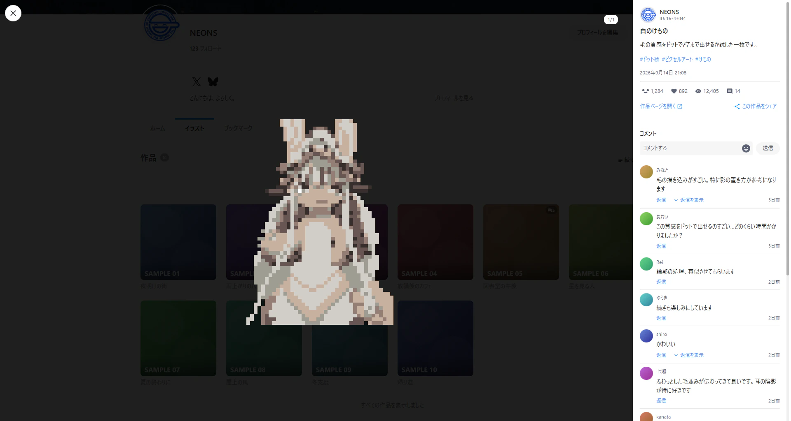
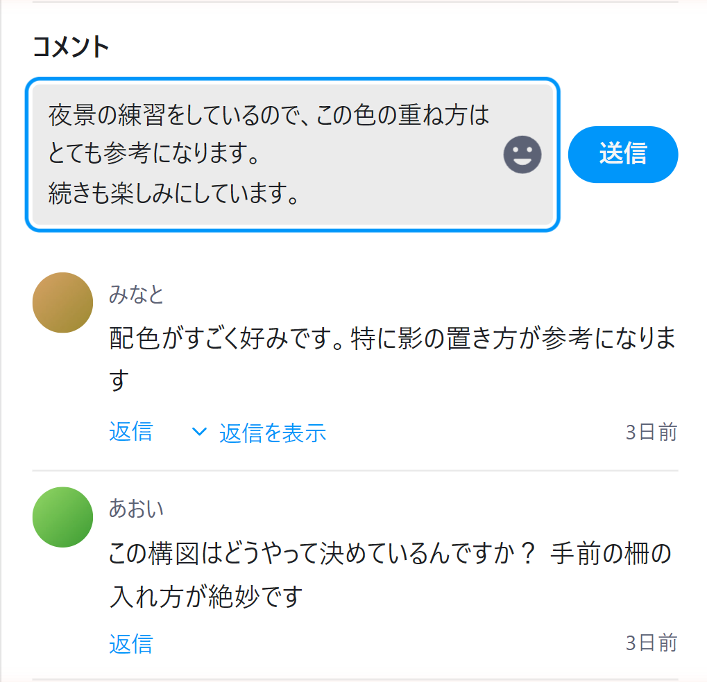
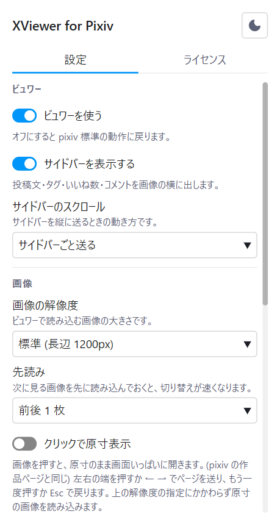
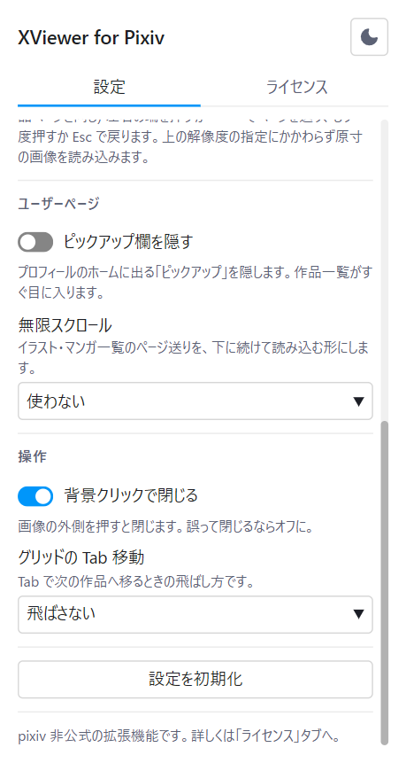

Chrome / Brave / Edge 対応・Firefox 版は審査中
pixiv を、X のように見る。
ユーザーページで作品をクリックすると、ページ遷移せずにその場でモーダルが開きます。 複数枚の切り替え、うごイラの再生、投稿文やコメントの閲覧から、いいね・ブックマーク・フォロー・コメントの投稿まで、 すべてモーダルの中で完結します。 閉じれば、元のグリッドの元のスクロール位置に戻ります。
Firefox 版は Firefox Add-ons の審査を待っています。公開され次第、このボタンから入手できるようになります。

一覧を離れずに、次の作品へ
作品を開くたびにページが切り替わり、戻るたびにスクロール位置を見失う。その往復をなくすための拡張機能です。
モーダルで開く
グリッドのクリックを受け取り、ページ遷移せずに表示します。URL は作品ページのものへ差し替わるので、リロードも共有もできます。
複数枚の切り替え
左右キーと画面端の矢印でページ送り。前後の画像を先読みするので、切り替えに待ち時間がありません。
作品から作品へ
上下キーでグリッドの前後の作品へ移動します。端まで来たら次のページ分を自動で読み足します。イラストとマンガのタブでは、その種別の作品だけをたどります。
うごイラの再生
zip を展開してフレームを組み立て、その場で再生します。一時停止にも対応しています。
原寸表示
画像をクリックすると、原寸のまま画面いっぱいに開きます。開いたままページ送りもできるので、細部を確かめながら読み進められます。
コメントを読む、書く
スタンプと絵文字を画像で表示し、返信の展開や続きの読み込みにも対応しています。投稿と返信、自分のコメントの削除も、モーダルを開いたままできます。
いいねとブックマーク
フォローと、X / Facebook / Pawoo / リンクのコピーへのシェアも含めて、モーダルの中から操作できます。ブックマークは Shift を押しながらで非公開。自分の作品には表示しません。
ダークとライト
ビュワーの配色は pixiv 本体の設定に追従します。設定を二重に持たせません。設定画面の配色は、右上のアイコンから切り替えられます。
投稿文もコメントも、画像の横に
サイドバーには投稿文、タグ、投稿日、いいね数、ブックマーク数、閲覧数、作者のアイコンとフォローボタンが並びます。 コメントはスタンプと絵文字を画像のまま描画し、返信もその場で開けます。
- サイドバーごと送るか、コメントだけ送るかを選べます
- 読み込みに失敗しても、再試行から続きを読めます
- 別のタブで押したいいねを、二重に数えません
- サイドバーを消して、画像だけを見ることもできます

返信も、閉じずにそのまま
コメントと返信は、モーダルを開いたまま投稿できます。入力欄は書いた行数に合わせて伸び、 絵文字とスタンプはパネルから選べます。Ctrl + Enter で送信、Enter は改行です。
- 自分のコメントは、2 段階の確認を挟んで削除できます
- 書きかけの文章があるときは、Esc でモーダルを閉じません
- 投稿したコメントは、pixiv 本体で書いたものと同じ扱いです

一覧を、途切れさせない
イラストやマンガの一覧のページャーを、下に続けて読み込む形にできます。 URL のページ番号は画面に出ているページへ追従するので、リロードしても同じあたりへ戻れます。
- 下まで来たら読み込む / 常に 1 ページ先を読んでおく、から選べます
- プロフィールのピックアップ欄を隠して、作品一覧をすぐ目に入れられます
拡張機能を、細かく設定できる
ツールバーのアイコンから開きます。ビュワー、画像、ユーザーページ、操作の 4 区分で、見え方から操作の癖まで自分好みに合わせられます。
- 画像の解像度と先読みの枚数を、回線や好みに合わせて選べます
- サイドバーの出し方やスクロール方式、背景クリックで閉じるかまで変えられます
- ビュワー自体をオフにすれば、pixiv 標準の動作に戻ります


設定でできること
すべてツールバーのポップアップから変更できます。設定は Chrome の同期領域に保存され、外部には送信されません。
| 区分 | 項目 | 既定 | 効果 |
|---|---|---|---|
| ビュワー | ビュワーを使う | オン | オフにすると pixiv 標準の動作に戻ります |
| ビュワー | サイドバーを表示する | オン | 投稿文、タグ、いいね数、コメントを画像の横に出します |
| ビュワー | サイドバーのスクロール | サイドバーごと | 投稿文からコメントまでを 1 つにつなげて送るか、投稿文を固定してコメントだけを送るか |
| 画像 | 画像の解像度 | 標準 | 原寸を選ぶと鮮明になりますが、読み込みは重くなります |
| 画像 | 先読み | 前後 1 枚 | 次のページを先に読み込んでおく枚数を選べます |
| 画像 | クリックで原寸表示 | オフ | 画像を押すと、原寸のまま画面いっぱいに開きます |
| ユーザーページ | ピックアップ欄を隠す | オフ | プロフィールのホームに出るピックアップ欄を隠します |
| ユーザーページ | 無限スクロール | 使わない | 下まで来たら読み込む / 常に 1 ページ先を読んでおく、から選べます |
| 操作 | 背景クリックで閉じる | オン | 画像の外側をクリックしたときに閉じるかどうか |
| 操作 | グリッドの Tab 移動 | 飛ばさない | グリッドで Tab を押したときに、ブックマークとタイトルをフォーカス順から外すか |
キー操作
Esc は絵文字パネル、原寸表示とシェアメニュー、モーダルの順に閉じます。書きかけのコメントがあるときはモーダルを閉じません。
コメントを書いている間は Enter が改行になり、← → ↑ ↓ はキャレットの移動に使われます。(作品は動きません)
動作環境
Manifest V3 に対応した Chromium 系ブラウザで動作します。Firefox 版は審査中です。
対応ブラウザ
Chrome、Brave、Edge などの Chromium 系ブラウザ。Chrome 120 以上が必要です。Edge は Edge アドオンからも入れられます。Firefox 版 (Firefox 140 以上のデスクトップ版) は Firefox Add-ons で審査中です。Safari には対応していません。
対象ページ
https://www.pixiv.net/ のユーザーページ。他のサイトでは動作しません。
ライセンス
ソースコードは GitHub で公開しています。免責事項と、同梱している第三者の成果物の表示は、設定画面のライセンスタブにあります。
対応言語
拡張機能の表示言語は、pixiv の表示言語に合わせて切り替わります。表は pixiv が表示言語として選べる 7 言語です。「リクエスト次第」の言語で pixiv を表示しているときは、英語で表示します。
| 言語 | 対応状況 |
|---|---|
| 日本語 | 対応 |
| 英語 | 対応 |
| 韓国語 | リクエスト次第 |
| 中国語 (簡体字) | リクエスト次第 |
| 中国語 (繁体字) | リクエスト次第 |
| タイ語 | リクエスト次第 |
| マレー語 | リクエスト次第 |
不具合の報告・ご要望
バグの報告、ご質問、機能のリクエストは お問い合わせフォーム へお送りください。GitHub をお使いの方は Issues でも受け付けています。
データは、pixiv の外へ出ません
この拡張機能には作者のサーバーがありません。通信するのは、あなたが開いている pixiv とその画像 CDN だけです。
収集しないもの
閲覧履歴、作品 ID、ユーザー ID、Cookie、認証情報、個人情報。いずれも取得も保存も送信もしません。あなたが書いたコメントも、その場で pixiv へ渡すだけで、拡張側には残りません。
保存するもの
あなたが選んだ 11 項目の設定と、最後に見た pixiv の表示言語。どちらも Chrome 内に留まり、外部サーバーへは出ません。
要求する権限
storage と https://www.pixiv.net/* の 2 つだけ。他のサイトへのアクセス権限は求めません。
これは非公式の拡張機能です。
pixiv プラットフォームを利用して開発したもので、ピクシブ株式会社が作成・配布しているアプリケーションではありません。 同社とは一切関係がなく、提携・支援・推奨を受けたものでもありません。
- 利用は自己責任でお願いします。本拡張の利用によって生じた損害について、作者およびピクシブ株式会社は責任を負いません
- R-18 作品の表示は pixiv 側の設定に従います。拡張側で年齢制限を回避することはしません
- いいねは取り消せません。これは pixiv の仕様で、押し間違えても元には戻せません
- コメントの投稿・削除は pixiv 本体と同じ扱いです。押した分だけそのまま pixiv へ送られます。削除は元に戻せないので、2 段階の確認を挟んでいます
- 作品を収集する機能はありません。ダウンロードも一括操作の自動化もなく、取得するのはいま開いている作品とその前後の数枚だけです
- pixiv の仕様変更によって動作しなくなる場合があります